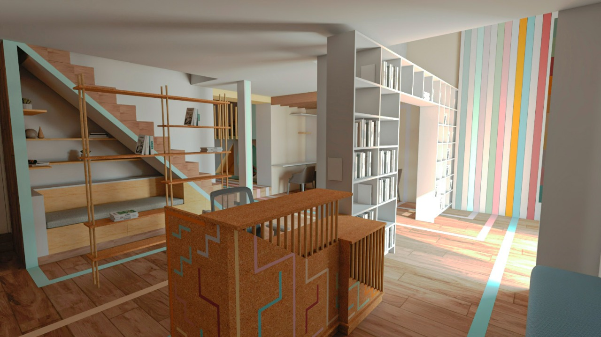
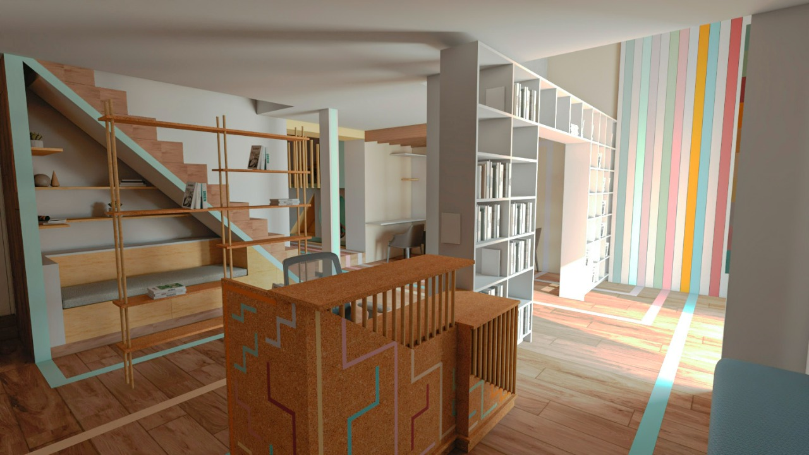

Proyectos culturales
2019

Museo Matzuo
Proyecto de simulación que se basa en la historia Calculando la vida y narra la vida de Matzuo Tangi, ojii-chan de la madre del autor. En este relato se menciona la vida de un hombre que nació en la época de crisis en Japón y tuvo que ir a otro país para poder tener una mejor vida con su familia. Lo más resaltante de este personaje fue la capacidad que adquirió para los cálculos matemáticos de manera mental a pesar de no haber asistido a un centro educacional. El desarrollo del proyecto se basa en dos estructuras: ortogonal y diagonal. La decisión de tener dos orientaciones es por el reflejo de las dos culturas involucradas en la historia, la japonesa y peruana. Esta dualidad se refleja en los materiales, cerramientos y diseños. A nivel de principios ordenadores tenemos el eje, ritmo y repetición.
2022
 

Biblioteca Mario Florián
Proyecto de simulación desarrollado en la ciudad de Contumazá en el departamento de Cajamarca. Este planteamiento fue más que nada una propuesta de remodelación ya que la biblioteca en verdad si existe y se ubica frente a la Plaza de Armas de la misma ciudad. El nombre de la biblioteca es por el poeta y profesor oriundo de la ciudad, Mario Alberto Florián Díaz. La primera tarea fue la elección de un concepto para marcar la pauta del espacio. Contumazá es una palabra del idioma quechua que relaciona Contur (cóndor) y Nasha (alas). Un apunte muy interesante es que este animal es prácticamente mudo debido a que tiene atrofiada la siringe. Esto es proporcional con el silencio predominante en una biblioteca. La palabra Planeación surge de la figura que proyecta el cóndor cuando vuela y por ser sinónimo de idear. Dinámica se obtiene al relacionar la imaginación e invención con biblioteca. Al final, resulta ser el concepto Planeación Dinámica.
2022
Centro de Servicio Comunal
Proyecto de simulación desarrollado en la antigua fábrica de la empresa cervecera Pilsen Callao en el cruce de la avenida Saenz Peña y el jirón Zepita en el distrito del Callao. Para este proyecto se inició con la investigación sobre el entorno y diagnóstico urbano relacionado a la zona. Este documentó compuso de antecedentes del entorno, morfología urbana, uso del suelo y espacio público, infraestructura y equipamiento, y sociedad-usuario-problemática. Toda esta información permitió analizar los problemas encontrados en la zona. Seguidamente, se elaboró un arquetipo de usuario donde se resumía a la población y poder generar un mapa de empatía en base a su comportamiento e idiosincrasia. Como concepto se propuso Entonación Dual debido a que resume los dos puntos de vista de la población chalaca que añora la época pasada, pero que ya no se encuentra en la sociedad. Cabe mencionar que el centro cuenta con cinco pisos.